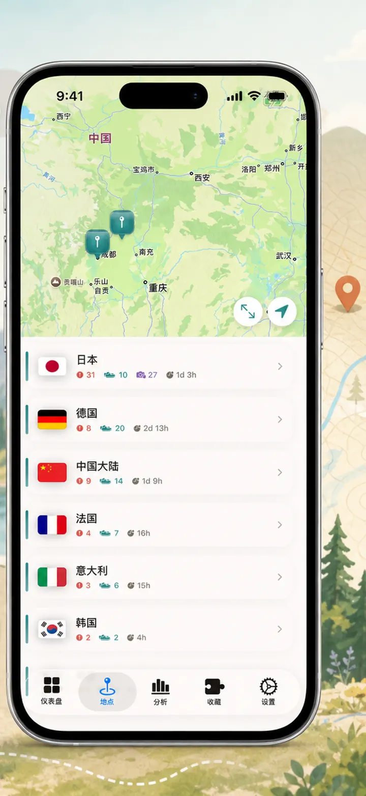
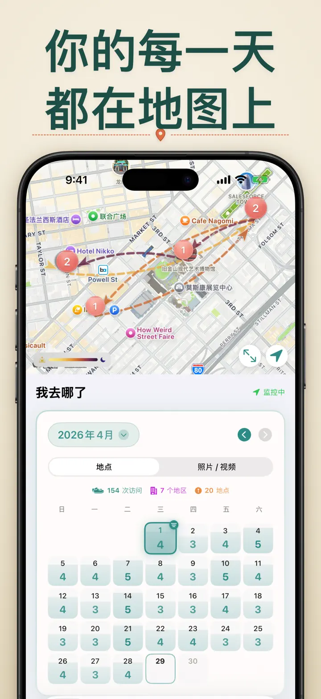
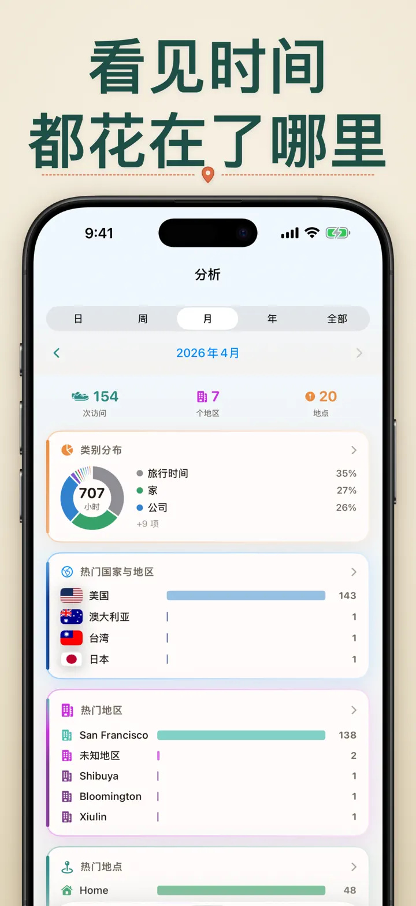
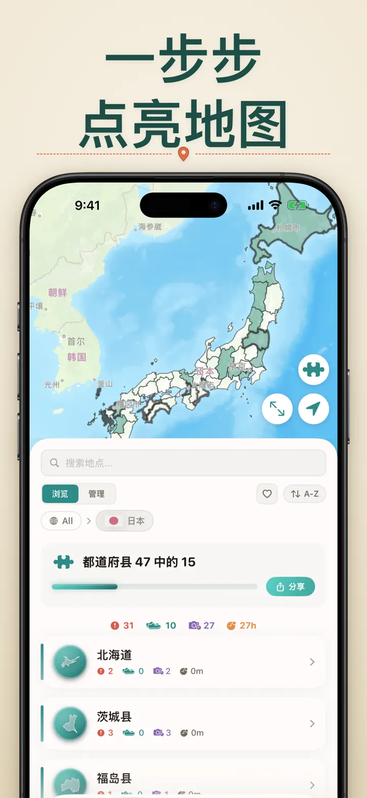
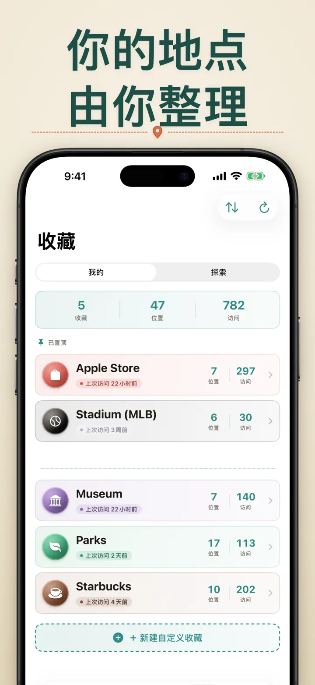
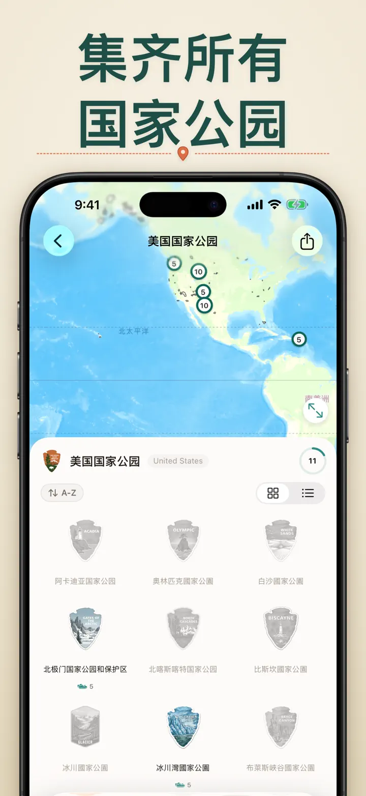
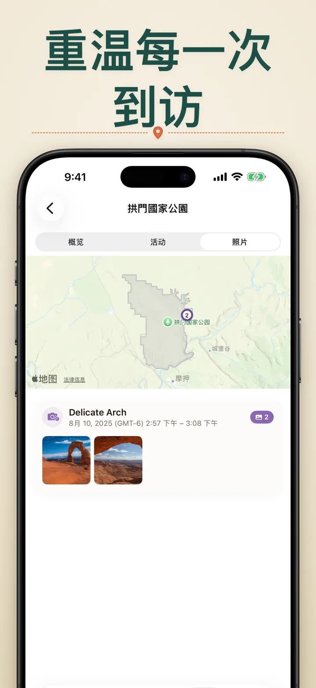

我去哪了?
全自动位置追踪，照片追踪与时间轴，移动记录，国家公园收藏记录
全新：日本 103 座一宫神社，每座都有专属木雕徽章。自动追踪到访、打造私人时间轴，全部在你的设备上完成。
从 App Store 下载关于本应用
我去哪了 — 你的私人位置记忆
还记得上个月那家超赞的餐厅在哪吗？想知道你在办公室和家里各待了多长时间？我去哪了 自动追踪你的到访记录，为你的生活轨迹编织一条精美的时间线。
自动追踪
无需手动记录。应用会在后台默默记录你的到达和离开时间，轻松建立详细的到访历史。
智能日历视图
按日、周或月查看你的到访记录。直观的日历一目了然地显示访问次数和不同地点数量。点击任意一天，即可查看当天的行踪。
主屏幕与锁定屏幕小组件
中尺寸主屏幕小组件让你一眼看到最近的到访记录。锁定屏幕小组件可显示当前位置、实时停留时长，或当日到访次数 — 点按即可直接跳回应用。
有序的地点管理
地点按地区和城市自动分组。可设置自定义分类，如家、公司、健身房或咖啡厅。创建专属分类，配上个性化图标和颜色，匹配你的生活方式。
强大的数据分析
发现你的生活规律：
- 各类别的时间分布
- 最常去的地方
- 每周作息分析
- 访问频率趋势
- 单个地点停留时长图表 — 按日、周、月或年查看你通常停留多久
国家地区收集
把旅行变成一幅拼图！看看你在每个国家到访了多少个州、省或地区。将你的探索进度以精美的拼图图片分享给亲朋好友，激励他们踏上下一段旅程。
国家公园进度
走遍山河大地！自动记录你到访的国家公园，追踪你的探索进度，与日常位置一同保存。
日本100名城
正在游历日本？全新内建收藏，自动追踪你到访过的日本100名城。在"收藏"标签页 → 探索 → 日本中即可找到。
自定义收藏
想追踪什么都行 — Apple Store、博物馆、酒馆、书店。创建一个收藏，设置关键词，让它自动累积。也可以随时手动添加或删除地点。每个收藏都会显示数量、完整到访历史和地图。
导入你的位置历史
从其他应用转过来？带上你的完整历史记录 — 格式自动识别，支持大型导出，导入前还能预览：
- Google Timeline（Google Maps 导出或 Google Takeout）
- Arc Timeline（你从 Arc 导出的每月 .json 文件）
- Moves（ProtoGeo／Facebook Moves 备份）
批量管理
在一个界面管理所有地点。搜索、排序、筛选。选择多个地点批量分类或删除，让你的地点库保持整洁有序。
隐私至上
位置数据保存在你的设备上。无需注册账号，不向服务器发送数据。你的行踪只属于你自己。
适用场景：
- 追踪工作时间和地点
- 记住去过的餐厅和商店
- 分析日常作息
- 记录旅行日记，追踪国家公园到访
- 费用报销和里程记录
- 了解时间分配
功能特色：
- 自动检测到达和离开
- 日历视图与每日到访时间轴
- 主屏幕与锁定屏幕小组件，支持深度链接
- 按地区和城市分组
- 自定义分类配图标和颜色
- 来自 Apple 地图的智能分类建议
- 详细到访历史含停留时长
- 单个地点停留时长图表（日／周／月／年）
- 数据分析面板含丰富洞察
- 搜索和筛选地点
- 国家地区收集及可分享的拼图图片
- 国家公园进度追踪
- "日本100名城"内建收藏
- 自定义收藏，支持关键词自动匹配、手动编辑和数据统计
- 批量地点管理
- 从 Google Timeline、Arc Timeline 和 Moves 导入
- 数据导出功能
- 无需注册账号
- 注重隐私保护
从今天开始构建你的位置记忆。下载我去哪了，再也不会忘记去过哪里。
Privacy Policy: https://masawata.net/privacy-policy.html Terms Of Service: https://www.apple.com/legal/internet-services/itunes/dev/stdeula/
屏幕截图







我去哪了?
全新：日本 103 座一宫神社，每座都有专属木雕徽章。自动追踪到访、打造私人时间轴，全部在你的设备上完成。
从 App Store 下载